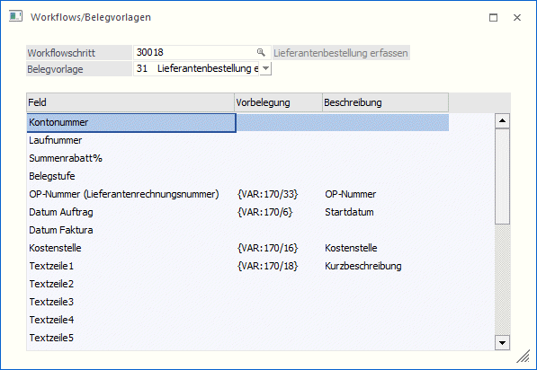
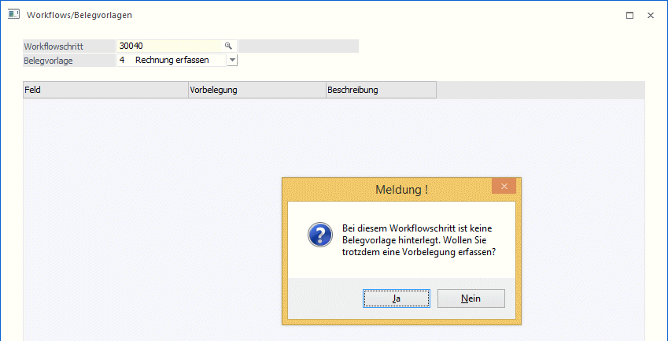
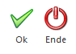

Im Menüpunkt
1 WinLine START
1 Vorlagen
1 Workflows/Belegvorlagen
besteht die Möglichkeit festzulegen, welche Werte aus einem CRM-Schritt (Felder aus der CRM-Tabelle / T170, sowie CRM-Zusatzfelder / T057) an ein individuelles Belegerfassen-Fenster übergeben werden sollen. Voraussetzung für eine Übernahme von Werten ist, dass im Workflowschritt die Folgeaktion "Vorlage nach CRM Fall öffnen" verwendet wird (damit im CRM-Schritt die Werte erfasst werden können, die in weiterer Folge in die Belegvorlage übernommen werden sollen).
Diese "Vorbelegung" aus dem CRM-Schritt kann im Zuge einer Neuanlage eines Beleges erfolgen. Bei einer Umwandlung eines Beleges in eine weitere Belegstufe, bei dem ggfs. keine "Neuanlage" eines Beleges erfolgt, werden die Vorbelegungen nicht unterstützt.

Ø Workflowschritt
In diesem Feld muss jener Workflowschritt angegeben werden, aus dem die Werte übernommen werden sollen. Zur Übergabe der Werte an das Belegerfassen-Fenster muss im Workflowschritt die Folgeaktion "Vorlage nach CRM Fall öffnen" inkl. hinterlegter Vorlage angegeben sein. Ist dies nicht der Fall, erfolgt ein entsprechender Hinweis.

Ø Belegvorlage
Aus der Auswahllistbox muss jene Vorlage angegeben werden, an die die Werte aus dem CRM-Schritt übergeben werden sollen. D.h. jene Vorlage, die im Zuge des CRM-Schrittes verwendet wird.
Nachdem die Belegvorlage ausgewählt wurde, wird die Tabelle mit allen Eingabefeldern der Vorlage gefüllt.
In der Spalte "Vorbelegung" können Variablen des CRM-Eintrages (T170) bzw. der CRM-Zusatzfelder (T057) ausgewählt werden.
Buttons

Ø OK
Durch Drücken des OK-Buttons wird die Vorbelegung Workflow/Belegvorlagen gespeichert.
Ø Ende
Durch Drücken des Ende-Buttons wird der Menüpunkt geschlossen. Nicht gespeicherte Eingaben werden dabei verworfen.